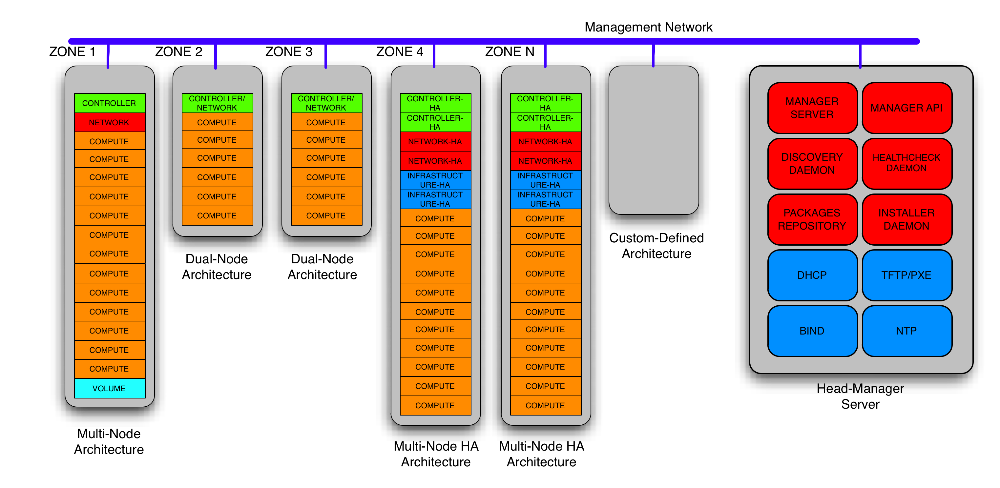
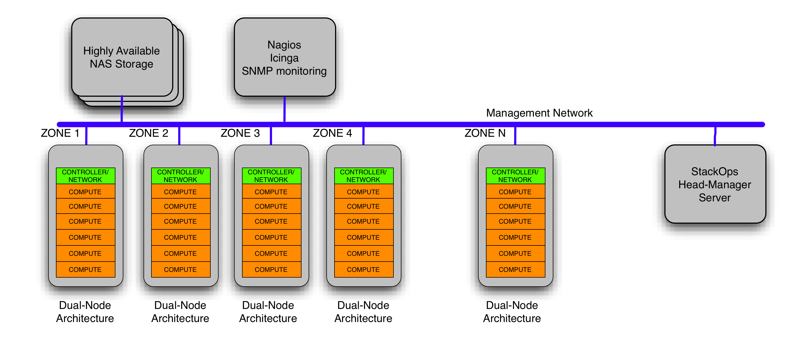
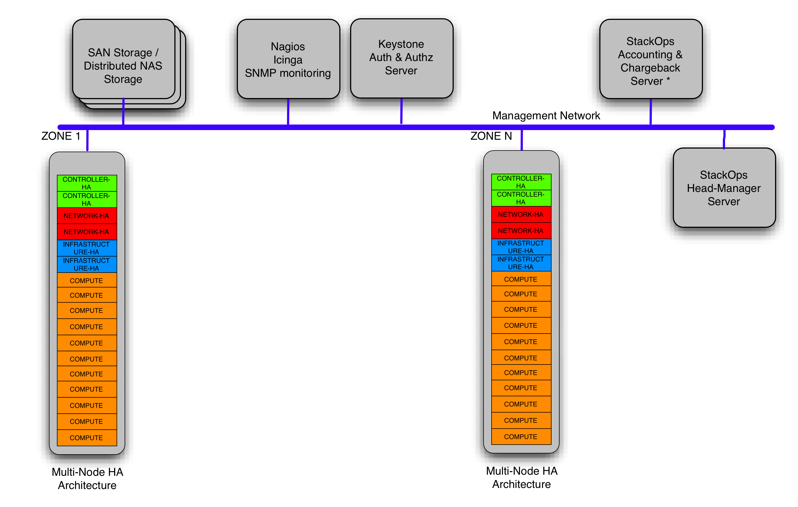

To define what an Architecture is, we first need to explain what we understand an Openstack Nova is in StackOps. For us, Openstack Nova is not a product. We don’t even start discussing if it is a finished product or not. We think Openstack Nova is a great set of tools, a Toolkit, which put together enable a vendor to offer a Cloud Fabric.
This Cloud Fabric solution is not enough to be able to offer services to third parties by itself. To be able to offer these services with Openstack Nova, we must first define an Architecture that will enable service provisioning. In StackOps, this architecture can be divided in three areas:
- Nova Components Architecture: The various Nova components can be configured in several ways to work in different modes. At StackOps we believe we can define a reduced set of options that group most of the clients’ needs, significantly simplifying the solution.
- Reference Architecture: The way the different Nova components work is not the same when deployed over one hardware system or another. Therefore, in our concept of architecture, one fundamental piece not covered by the Openstack community is the Reference Systems Architecture used for the deployment of Nova.
- Service Architecture: How the different Nova components are grouped over the system architecture to be commercialized by the Service provider or used by an IT Department is also not a responsibility of the Openstack community, but of companies such as StackOps, which packages the whole solution taking into account the specific needs of its customers.
The architectures are the essential key to the deployment of OpenStack solutions. They are ready-made solutions accelerating the deployment of OpenStack. Each architecture is formed hierarchically by:
- Components: Where the services are running, with specific properties
- Services: Properties group.
- Properties: Set of parameters to define the architecture
This diagram shows the distribution of the different components that configure a client’s Architecture. In the right side of the diagram, we can view the ‘orchestrator’ component for deployment and operation: Automation.
This component, developed by StackOps, is in charge of implementing different Openstack Nova Service Architectures in the client’s data center. As shown in the diagram, Automation can deploy different Openstack architecture solutions for different system operation environments.
Apart from the predefined system architectures, Automation can be extended to be able to deploy and manage ad-hoc architectures with a client’s specific needs (ISVs, HPC, Grid…)
To be able to deploy these architectures, the client must deploy first a Reference Architecture recommended by StackOps, and a Nova Component Architecture based on StackOps Distro.
This example shows how a client may deploy a DualNode Service Architecture supported by a Reference Architecture that uses a storage system based on a NAS (Network Attached Storage), monitoring based on Nagios, and SMNP. Within this architecture, each zone has all Nova components deployed over one single node, except for computing nodes. The controller node that contains all Novacomponents can also be deployed in a Virtualized system with high consolidation capacity (for financial optimization).
This type of Architecture may be used to sell on-Demand Private Clouds, what we call Virtual Private Cloud
This other example shows a Highly Available MultiNode Service Architecture supported by a Reference Architecture that uses a SAN (Storage Array Network) or Distributed NAS storage system, monitoring based on Nagios and SNMP, Keystone as a centralized Identity Management system and StackOps own Accounting and Chargeback systems. Within this architecture, each zone has eachone of the Nova components deployed in their own physical node, with a High Availability configuration.
This type of Architecture is the traditional one used in the deployment of Public Cloud or Highly Scalable Private Cloud solutions.
The operations allowed in the python-automatioclient are:
architecture-list List all the architectures that are available on
automation.
architecture-show Show details about an architecture.
architecture-create Add a new architecture.
architecture-delete Remove a specific architecture.
architecture-template Get template from a specific architecture.
$ architecture-list
+----+----------------------+
| id | name |
+----+----------------------+
| 1 | sample-architecture1 |
| 2 | sample-architecture- |
+----+----------------------+
To show details about an architecture this one must be reference by its id
$ architecture-show 1
+----------+----------------------------+
| Property | Value |
+----------+----------------------------+
| id | 1 |
| name | sample-architecture1 |
| roles | { |
| | "name": "controller", |
| | "steps": [ |
| | { |
| | "1": [ |
| | "mysql" |
| | ] |
| | }, |
| | { |
| | "2": [ |
| | "rabbitmq" |
| | ] |
| | } |
| | ] |
| | } |
+----------+----------------------------+
To delete a specific architecture this one must be reference by its id
$ architecture-delete 2
$ architecture-list
+----+----------------------+
| id | name |
+----+----------------------+
| 1 | sample-architecture1 |
+----+----------------------+
To show the template of a specific architecture this one must be reference by its id
$ architecture-template 1
{
"profile": {
"name": "",
"components": [
{
"name": "mysql",
"properties": {
"set_quantum": {
"root_pass": "stackops",
"quantum_password": "stackops",
"quantum_user": "quantum"
},
"set_keystone": {
"root_pass": "stackops",
"keystone_password": "stackops",
"keystone_user": "keystone"
},
"teardown": {},
"set_cinder": {
"cinder_user": "cinder",
"root_pass": "stackops",
"cinder_password": "stackops"
},
"set_automation": {
"automation_password": "stackops",
"root_pass": "stackops",
"automation_user": "automation"
},
"set_accounting": {
"accounting_user": "activity",
"root_pass": "stackops",
"accounting_password": "stackops"
},
"set_nova": {
"root_pass": "stackops",
"nova_password": "stackops",
"nova_user": "nova"
},
"install": {
"root_pass": "stackops",
"keystone_user": "keystone",
"cinder_user": "cinder",
"quantum_password": "stackops",
"glance_password": "stackops",
"automation_user": "automation",
"quantum_user": "quantum",
"automation_password": "stackops",
"keystone_password": "stackops",
"cinder_password": "stackops",
"glance_user": "glance",
"nova_user": "nova",
"nova_password": "stackops"
},
"set_glance": {
"root_pass": "stackops",
"glance_password": "stackops",
"glance_user": "glance"
},
"validate": {
"username": "",
"drop_schema": null,
"install_database": null,
"database_type": "",
"host": "",
"password": "",
"port": "",
"schema": ""
},
"set_portal": {
"root_pass": "stackops",
"portal_user": "portal",
"portal_password": "stackops"
}
}
},
{
"name": "rabbitmq",
"properties": {
"start": {},
"validate": {
"rpassword": null,
"virtual_host": null,
"host": "",
"ruser": null,
"service_type": "",
"rport": null
},
"stop": {},
"install": {
"cluster": false,
"password": "guest"
}
}
}
],
"properties": {}
}
}